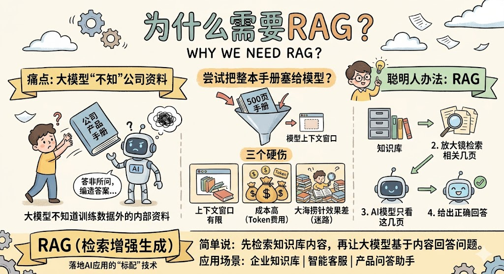
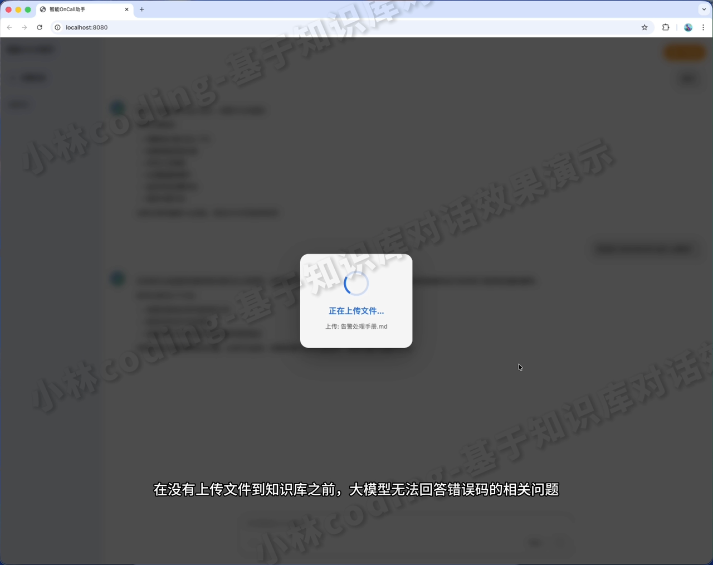
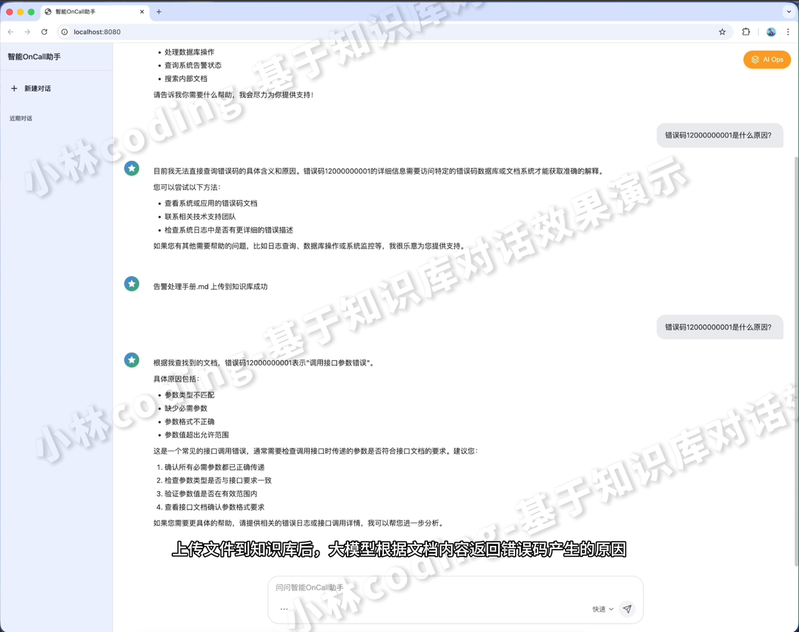
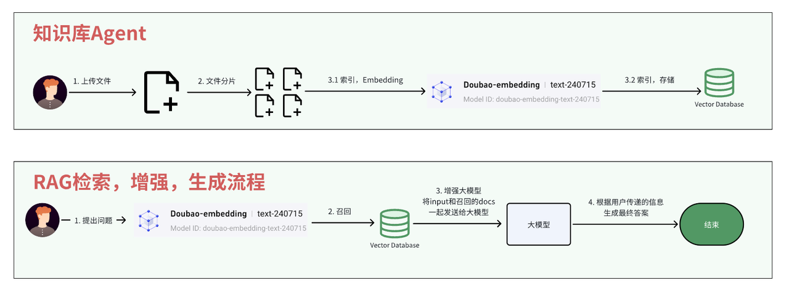
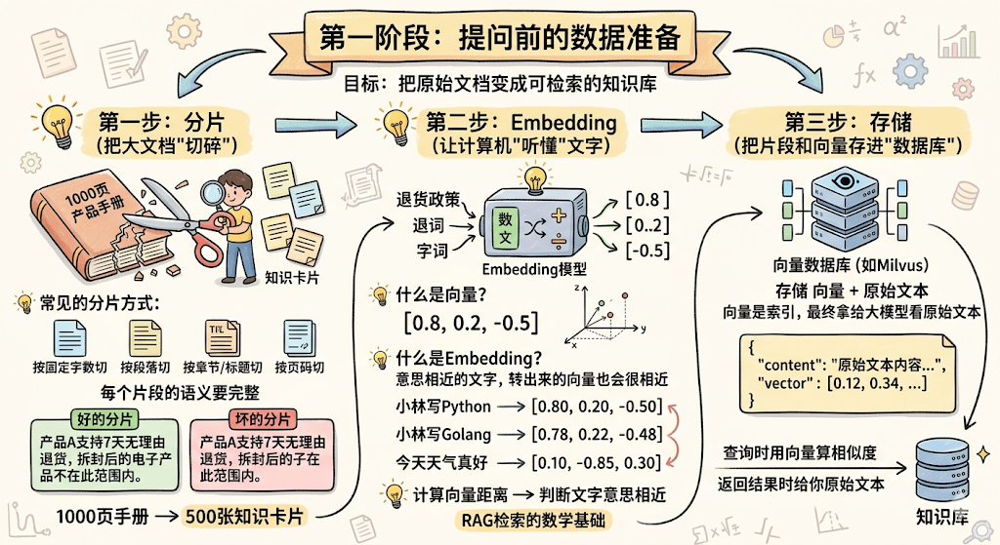
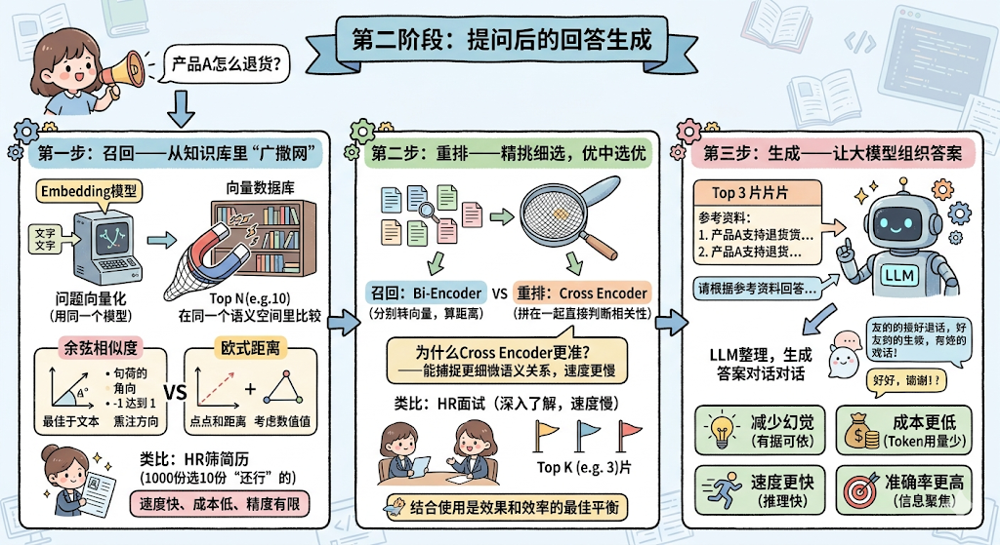
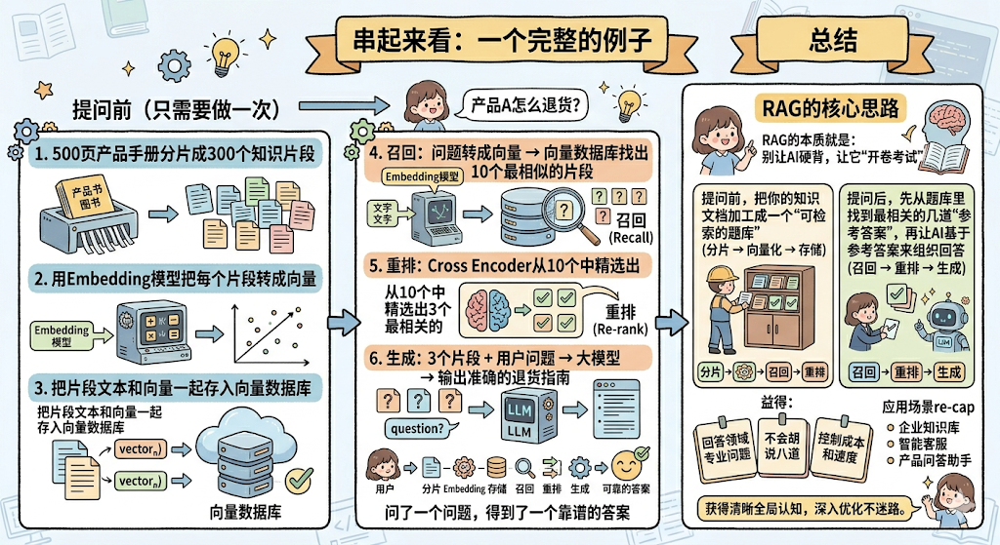

RAG 学习笔记
一、为什么需要 RAG？

大模型的知识边界受限于训练数据（截止日期前公开资料）。对于企业私有文档、实时信息、长尾知识，大模型无法直接回答。尝试把整本手册作为 prompt 输入存在三大问题：
- 上下文窗口有限：即便模型支持 128K tokens，长文本中性能会下降，且无法容纳极大型文档。
- 成本高：每次请求发送所有文档，token 消耗巨大（尤其使用商业 API）。
- 大海捞针：大量噪声中模型注意力分散，难以定位关键信息，容易产生幻觉。
RAG（Retrieval-Augmented Generation） 的解决方案：检索相关片段 + 基于片段生成答案。本质是“开卷考试”，让回答有据可依。
应用场景：企业知识库、智能客服、垂直领域问答、实时数据增强 —— AI 落地标配技术。
|

|
|二、RAG 核心流程（两条链路）

- 提问前（数据准备-离线）：分片 → Embedding → 存储
- 提问后（回答生成-在线）：召回 → 重排 → 生成
三、第一阶段：数据准备（离线）
目标：把原始文档转化为可检索的向量数据库。

1. 分片（Chunking）—— 深入详解
定义：将长文档切分成适合 Embedding 模型输入长度限制的小文本块（chunk）。分片质量直接影响检索的精度和生成的效果。
1.1 常见分片策略
| 策略 | 做法 | 优点 | 缺点 | 适用场景 |
|---|---|---|---|---|
| 固定大小分片 | 按固定字符/token 数（如 512 tokens）切分 | 简单可控，计算均匀 | 极易切断语义边界 | 通用基线 |
| 段落分片 | 按 \n\n 或自然段落切分 | 保留段落完整性 | 段落长度差异大，可能过大或过小 | 结构化文档 |
| 句子分片 | 按句号/感叹号等切分 | 语义单元最完整 | 可能过于细碎 | 高精度检索 |
| 递归分片 | 先按段落，段落超限再按句子 | 兼顾完整与长度 | 实现稍复杂 | 生产环境常用 |
| 语义分片 | 用模型（如嵌入相似度）检测主题边界 | 最智能，边界精准 | 计算成本高 | 高质量知识库 |
1.2 分片核心原则：语义完整性
切分时不能让一个完整的语义单元（如一个步骤、一个定义）被切断。例如：
“支持 7 天无理由退货，但拆封后的电子产品除外。” 如果在“但”字前面切断，前一半只留下“支持退货”，后一半只留下“除外”，两个片段都会产生误导。
1.3 Chunk 大小的权衡
- 太小：上下文缺失，检索时信息不全；模型可能找不到足够证据。
- 太大：噪声增加，相似度计算被无关词稀释；可能超过 Embedding 模型输入限制（如 512 tokens）。
工程经验：常用范围 256–512 个 token。可设置 重叠（overlap） 10%~20%，让相邻 chunk 共享边界信息，避免信息丢失。
1.4 分片对下游环节的影响
- 检索：细粒度 chunk 提高召回精确性，但可能漏掉跨 chunk 的上下文。
- 重排：chunk 大小影响 Cross-Encoder 的输入长度，过长会显著增加延迟。
- 生成：多个小 chunk 比一个大 chunk 更灵活，但 prompt 中拼接多个片段可能超过大模型上下文限制。
2. Embedding（向量化）—— 深入详解
定义：将文本映射到高维连续向量空间，语义相似的文本在空间中距离更近。这是检索的数学基础。
2.1 常用 Embedding 模型
| 模型 | 维度 | 特点 | 最佳场景 |
|---|---|---|---|
text-embedding-3-small | 1536 | 通用性好，API 调用 | 通用英文 |
text-embedding-3-large | 3072 | 精度更高，成本略高 | 高精度英文 |
cohere embed-english-v3.0 | 1024 | 支持多语言，压缩表示 | 多语言 |
BAAI/bge-large-zh | 1024 | 中文 SOTA，开源 | 中文文档 |
BAAI/bge-m3 | 1024 | 多语言、多粒度，支持稀疏+稠密 | 混合检索 |
sentence-transformers/all-MiniLM-L6-v2 | 384 | 轻量，适合本地推理 | 原型/资源受限 |
intfloat/e5-large-v2 | 1024 | 性能强劲，需微调 | 领域自适应 |
2.2 训练原理
Embedding 模型通常采用 对比学习（Contrastive Learning） 训练：
- 正例：语义相似的文本对（如同义句、问答对、同文档的不同部分）。
- 负例：语义不相似的文本对（随机采样）。
- 目标：拉近正例在向量空间中的距离，推远负例的距离。常用损失函数：InfoNCE、Triplet Loss。
2.3 向量距离计算
- 余弦相似度：
cos(θ) = (A·B)/(||A|| ||B||)，范围 [-1,1]。值越大越相似。只关心方向（语义），不关心长度（文本长度差异），适合文本检索。 - 欧氏距离：
sqrt(Σ(A_i - B_i)^2)，值越小越相似。既看方向也看长度，对向量归一化前使用。 - 点积：
A·B，在向量已归一化的前提下等价于余弦相似度。很多 ANN 库对点积优化更好。
2.4 注意事项
- 一致性：索引与查询必须使用同一 Embedding 模型，否则不在同一语义空间。
- 归一化：使用余弦相似度时，通常先对向量做 L2 归一化，然后点积等价于余弦。
3. 存储：向量数据库
定义：专门存储和检索向量的数据库，通过近似最近邻（ANN）算法实现毫秒级检索。
主流向量数据库对比：
| 数据库 | 实现语言 | 索引类型 | 分布式 | 适用场景 |
|---|---|---|---|---|
| Milvus | Go/C++ | HNSW, IVF, IVF_PQ | ✅ | 生产级大规模 |
| Qdrant | Rust | HNSW | ✅ | 高性能/中等规模 |
| Weaviate | Go | HNSW | ✅ | 混合检索（向量+关键词） |
| Chroma | Python | HNSW | ❌ | 轻量原型 |
| FAISS | C++/Python | 多种 | ❌（库） | 研究/本地 |
| PGVector | C | IVFFlat, HNSW | ✅（PG 集群） | 复用现有 PostgreSQL |
存储结构：每条记录包含 (id, vector, metadata, original_text)。metadata 用于前置过滤（如限定时间、部门）。
ANN 算法（快速近似最近邻）：
- HNSW（Hierarchical Navigable Small World）：多层图结构，检索 O(log N)，召回率极高，内存占用较大。目前最流行。
- IVF（Inverted File）：通过聚类划分空间，检索时只访问相近的几个聚类中心，内存友好。
- PQ（Product Quantization）：压缩向量为码本，大幅减少内存，精度略有损失。
检索流程：查询向量 → ANN 搜索 → 返回 Top-N 相似向量对应的 original_text 和 metadata。
四、第二阶段：回答生成（在线）

1. 召回（Retrieval）—— 含混合搜索详解
召回阶段的目标：从海量知识库中快速取出可能相关的 Top-N 个片段（N 通常 10~50）。
1.1 纯向量召回（常规做法）
用户查询经过 Embedding 模型得到向量，在向量数据库中 ANN 搜索返回 Top-N。
优点：快、支持语义匹配。
缺点：完全依赖向量相似度，对精确关键词匹配较弱（如产品型号“ABC-123”可能被语义漂移带偏）。
1.2 混合搜索（Hybrid Search）—— 深入
混合搜索结合 向量检索（语义）和 关键词检索（词法），兼顾两者优势。
关键词检索代表作：BM25
BM25 是 TF-IDF 的改进版，计算 query 中每个词与文档的相关性分数：
BM25(q,d) = Σ_{t in q} IDF(t) * ( (k1+1) * f(t,d) ) / ( f(t,d) + k1*(1-b+b*|d|/avgdl) )
f(t,d)：词 t 在文档 d 中的词频。|d|：文档长度，avgdl平均长度。b 控制长度归一化（通常 0.75）。k1控制词频饱和度（通常 1.2~2.0）。IDF(t)：逆文档频率，罕见词权重高。
BM25 特点：
- 适合精确匹配（产品名、代码、专有名词）。
- 不依赖训练数据，无监督。
- 对长文档有长度惩罚，避免过于偏长文档。
混合搜索的实现：
- 独立执行向量检索和 BM25 检索，各自得到分数和排名。
- 用 RRF（Reciprocal Rank Fusion） 或其他融合算法合并两路结果。
RRF 算法详解：
RRFscore(d) = Σ_{s in systems} 1 / (k + rank_s(d))
rank_s(d)：文档 d 在系统 s（如向量检索）中的排名（从 1 开始）。k：平滑常数，通常取 60。- 最终按 RRFscore 降序排列，得到混合检索结果。
RRF 优点：
- 不需要对分数进行归一化（不同系统的分数尺度可能不同）。
- 对极端排名不敏感，鲁棒性好。
- 计算简单，可扩展多路召回。
其他融合方式：
- 加权求和：
score = α * vector_score + (1-α) * bm25_score，需归一化分数（如 min-max）。 - 互信息/学习排序（Learning to Rank）：用训练数据学习融合权重，更优但需标注。
1.3 多路召回扩展
除了向量 + BM25，还可以加入：
- 知识图谱召回：实体链接后从图数据库取相关三元组。
- SQL 召回：结构化数据查询。
- 时间衰减：近期文档提权。
2. 重排（Rerank）—— 超详细解释
问题背景：召回阶段返回的 Top-N 个片段中，可能混入一些“语义上有点相关但其实不相关”的噪声。例如，用户问“产品A的退货政策”，向量检索可能把产品B的退货政策也召回，因为“退货政策”这个词向量相似。召回阶段用的是 Bi-Encoder，问题和文档分别编码，最后计算一个浅层相似度（如余弦），这种浅交互无法捕捉复杂语义关系。
解决方案：引入 Cross-Encoder 模型进行重排。
2.1 Bi-Encoder vs Cross-Encoder 对比
| 特性 | Bi-Encoder | Cross-Encoder |
|---|---|---|
| 编码方式 | 问题和文档独立编码 | 问题和文档拼接后联合编码 |
| 交互程度 | 浅（只在最后计算相似度） | 深（Transformer 每层都互相注意） |
| 计算效率 | 快（文档向量可预计算） | 慢（每次查询都需对所有候选文档实时计算） |
| 精度 | 较低 | 高（State-of-the-art） |
| 适用阶段 | 召回（粗筛） | 重排（精筛） |
形象比喻：
- Bi-Encoder 像 HR 初筛简历：只看关键词和学历，快速过滤。
- Cross-Encoder 像技术面：仔细看项目细节，判断真实匹配度。
2.2 Cross-Encoder 工作原理
输入：[CLS] 问题文本 [SEP] 文档文本 [SEP]，经过 Transformer（如 BERT、RoBERTa）编码，取 [CLS] 的输出通过一个全连接层得到相关性分数（0~1 或 logits）。
为什么更准？因为每一层 self-attention 都可以让问题中的词与文档中的词直接交互，捕捉到例如“否定词”、“条件状语”、“指代消解”等复杂语义关系。例如：
- 问题：“哪些产品不支持退货？”
- 文档片段：“产品A支持退货。” Cross-Encoder 能通过“不支持” vs “支持”的注意机制判断为不相关；而 Bi-Encoder 可能因为共享“退货”一词给出较高的向量相似度。
2.3 常用重排模型
| 模型 | 特点 | 推荐场景 |
|---|---|---|
cross-encoder/ms-marco-MiniLM-L-6-v2 | 轻量，6 层 MiniLM，速度快 | 低延迟要求 |
cross-encoder/ms-marco-MiniLM-L-12-v2 | 12 层，精度更高 | 平衡 |
BAAI/bge-reranker-base | 中文支持好，基于 XLM-RoBERTa | 中文 |
BAAI/bge-reranker-large | 更大版本，精度最高 | 高精度中文 |
| Cohere Rerank (API) | 闭源，调用简单，效果好 | 商业应用 |
2.4 重排流程
- 召回阶段得到 N 个候选片段（例如 N=50）。
- 对于每个候选片段，与用户 query 一起输入 Cross-Encoder，得到相关性分数。
- 按分数降序重排，取 Top-K（例如 K=5）送入生成阶段。
- 注意：N 不能太大，否则重排延迟过高（Cross-Encoder 是 O(N) 的实时计算）。通常 N ≤ 100，K ≤ 10。
2.5 延迟与精度权衡
- 如果对延迟极度敏感（如实时对话），可以减小 N，甚至跳过重排，直接用召回结果。
- 如果对精度要求极高（如法律文档检索），可以增大 N，使用高性能 GPU 加速 Cross-Encoder。
- 业界常用方案：召回 N=50，重排 K=5，延迟增加 50~200ms，精度提升显著。
3. 生成（Generation）—— 详细扩展
定义：将重排后的 Top-K 片段作为上下文，和用户问题一起组装成 prompt，输入大语言模型（LLM）生成最终答案。
3.1 Prompt 构造模板
你是一个智能助手。请基于以下参考资料回答用户问题。
如果参考资料不包含答案，请明确回答“根据现有资料无法回答”，不要编造。
参考资料：
[1] {chunk_1}
[2] {chunk_2}
...
[K] {chunk_K}
用户问题：{query}
请给出回答（可以引用参考资料的编号）：
3.2 LLM 选型
| 类别 | 模型 | 上下文长度 | 特点 |
|---|---|---|---|
| 闭源 | GPT-4o | 128K | 最强通用，成本高 |
| 闭源 | Claude-3.5 Sonnet | 200K | 长上下文友好 |
| 开源 | Llama 3.1 70B | 128K | 综合能力强 |
| 开源 | Qwen 2.5 72B | 128K | 中文优秀 |
| 开源 | DeepSeek-V3 | 64K | 性价比高 |
| 开源 | Mistral 7B | 32K | 轻量可部署 |
3.3 生成阶段技巧
- 低温度（0.1~0.3）：使模型更忠实于参考资料，减少创造性编造。
- 强制引用：prompt 要求模型输出引用编号，如“根据[2]中的描述…”，提高可追溯性。
- 拒绝回答：当检索到的片段相关性分数低于阈值（如 Cross-Encoder 分数 < 0.5），或者 prompt 中明确告知“无答案时拒绝”。
- 流式输出：对交互式应用，流式返回 token 可降低首字延迟感知。
3.4 RAG 生成 vs 纯生成
| 方面 | 纯 LLM 生成 | RAG 生成 |
|---|---|---|
| 知识来源 | 训练参数记忆 | 动态检索 |
| 幻觉风险 | 高 | 低 |
| 可更新性 | 需重新训练或微调 | 更新知识库即可 |
| 可解释性 | 黑盒 | 可展示引用 |
| 对外部知识的依赖 | 无 | 需构建高质量知识库 |
五、完整流程示例（含混合搜索+重排）

离线阶段：
- 产品手册 500 页 → 采用递归分片（段落优先，超长段落再按句子切），每片 400 tokens，重叠 20%，得到 3000 个 chunks。
- 使用
BAAI/bge-large-zh将每个 chunk 转为 1024 维向量，存入 Qdrant。 - 同时构建 BM25 倒排索引（可用 Elasticsearch 或 Qdrant 内置的 BM25 功能）。
在线阶段（一次查询）：
- 用户问：“产品A怎么退货？发票丢失有影响吗？”
- 召回：
- 向量检索：问题 Embedding → ANN 返回 Top 50。
- BM25 检索：问题经分词 → 倒排索引返回 Top 50。
- 融合：对两路结果做 RRF（k=60），得到混合召回的 Top 50。
- 重排：50 个候选与问题逐一通过
bge-reranker-large打分，取 Top 5。 - 生成：构造 prompt，送入 Qwen 2.5 72B，得到回答：“根据[1]中的退货政策，产品A支持7天无理由退货，但需要提供购买凭证。若发票丢失，可使用订单截图作为替代证明。具体步骤：1. 登录官网…”
六、进阶话题深度扩展
6.1 Self-RAG（自反式检索）
核心思想：让 LLM 自己决定何时检索、检索什么、以及是否利用检索结果。模型通过特殊 token（如 [Retrieve]、[Relevant]、[Support]）进行决策。
步骤：
- 模型生成时判断是否需要检索（
[Retrieve]）。 - 若需要，检索相关片段。
- 模型评估检索结果的相关性（
[Relevant]）和对生成的支持度（[Support]）。 - 基于评估决定生成最终输出（可能忽略检索或反驳）。
优点：减少不必要的检索，提高效率；能处理检索无结果或结果冲突的情况。
6.2 HyDE（Hypothetical Document Embeddings）
问题：用户查询通常很短（如“退货流程”），直接 Embedding 可能丢失信息。
HyDE 做法：
- 让 LLM 基于用户问题生成一个假设的答案文档（即使不完美）。
- 对这个假设文档进行 Embedding，代替原查询向量去检索。
- 检索时更倾向于召回与假设答案相似的真实文档。
效果：通过扩展查询为更丰富的文档，提升了检索的召回率，尤其适合“问题-答案”不直接匹配的场景。
6.3 多级检索与递归检索
对于大型文档集，一次检索可能不够精确。递归检索：
- 先用粗粒度检索找到相关章节。
- 在章节内部再次进行细粒度检索（如句子级）。
- 最终返回最相关的细粒度片段。
适合长文档（如书籍、论文）。
6.4 评估指标体系
| 指标 | 计算方式 | 说明 |
|---|---|---|
| Hit Rate | 召回结果中包含正确答案的比例 | 反映召回覆盖能力 |
| MRR（Mean Reciprocal Rank） | 1/(正确答案排名) 的平均值 | 反映排序质量 |
| NDCG（Normalized Discounted Cumulative Gain） | 考虑多级相关性 | 排序质量更精细 |
| Faithfulness | 生成答案是否与检索片段矛盾 | 评估幻觉程度 |
| Answer Relevance | 答案是否回答了问题 | 生成质量 |
| Context Relevancy | 检索片段是否与问题相关 | 检索质量 |
6.5 缓存与性能优化
- 查询缓存：相同或相似查询直接返回缓存结果，减少检索+生成成本。
- 语义缓存：用 Embedding 相似度判断新查询与历史查询的相似度，高于阈值则复用。
- 异步索引更新：文档更新时异步重新分片+Embedding，保证检索实时性。
七、常见问题与参考答案
Q1：分片大小如何选择？过小或过大会有什么问题？
A：分片大小没有绝对最优值，需要根据文档类型和下游任务调整。过小导致上下文缺失，检索到的片段信息不完整；过大会引入噪声，且可能超过 Embedding 模型的输入限制（如 512 tokens）。通常从 256–512 tokens 开始实验，用检索评估指标（如 Hit Rate）调优。重叠（overlap）可以缓解边界信息丢失。
Q2：为什么需要混合搜索？只用向量检索不行吗？
A：纯向量检索在语义匹配上很强，但对于精确关键词匹配（如产品型号、错误码）可能不如 BM25。混合搜索结合了语义（向量）和词法（BM25）两种信号，通过 RRF 等方式融合，能同时召回语义相关和词法精确匹配的文档。尤其在用户 query 包含专有名词时，BM25 可以有效提升召回率。
Q3：请详细解释 Cross-Encoder 重排的原理，以及为什么比 Bi-Encoder 更准。
A：Bi-Encoder 将问题和文档独立编码成向量，最后只做一次浅交互（点积/余弦）。这种方式丢失了词与词之间的细粒度对齐信息。Cross-Encoder 将问题和文档拼接在一起，输入完整的 Transformer，每一层的 self-attention 都能让问题中的每个词与文档中的每个词进行全交互，从而能捕捉到否定、条件、指代等复杂语义关系。虽然 Cross-Encoder 计算慢（每个文档都要过一遍大模型），但精度远高于 Bi-Encoder，因此用于召回后的重排阶段。
Q4：如何评估 RAG 系统的好坏？
A：从检索和生成两个维度评估。检索侧：Hit Rate（正确答案是否在召回结果中）、MRR（正确答案排第几）、NDCG（多级相关性）。生成侧：Faithfulness（答案是否基于检索片段，有没有幻觉）、Answer Relevance（答案是否相关）、Context Relevancy（检索片段是否相关）。通常需要用人工标注的测试集或自动化 LLM 评估。
Q5：RAG 和微调（Fine-tuning）的区别？各自适用场景？
A：RAG 不修改模型参数，通过外部知识库增强生成，适合需要实时更新的知识（如新闻、企业文档）、私有数据、以及长尾知识。微调将知识编码进模型参数，适合改变模型风格/行为（如格式化输出、角色扮演）或学习固定的领域知识（如医疗术语）。两者可以结合：微调让模型学会“如何使用 RAG 资料”，RAG 提供具体内容。
Q6：如果用户的问题非常模糊，比如“帮我看看那个东西”，RAG 会怎么处理？
A：这种问题缺少实体信息，直接检索效果很差。实际系统可以：
- 要求用户澄清（对话式 RAG）。
- 利用历史对话中的上下文指代消解（如“那个东西”可能指上一轮提到的产品）。
- 查询改写：用 LLM 将模糊问题重写为具体问题。例如，“那个东西”改写为“之前讨论的产品A”。
- 如果不处理，检索结果可能随机，生成阶段应拒绝回答或询问更多信息。
Q7：大模型的上下文窗口越来越长（如 1M tokens），RAG 还有必要吗？
A：即使上下文窗口极大，直接塞入所有文档仍有问题：成本高（处理 1M tokens 的延迟和费用很大）、噪声干扰（大量无关文本会稀释模型注意力）、幻觉风险（长文本中模型更容易“遗忘”关键信息）。RAG 通过检索聚焦相关内容，依然能提供更高效、更准确的答案。不过长上下文可以在 RAG 中作为“二次确认”或处理无法分片的特殊文档。
八、总结图
| 阶段 | 核心任务 | 关键技术 | 产出 |
|---|---|---|---|
| 分片 | 文档切块 | 递归切分、重叠 | 语义完整的小块 |
| Embedding | 文本→向量 | 对比学习模型、余弦相似度 | 向量 + 原始文本 |
| 存储 | 向量索引 | 向量数据库（HNSW/IVF） | 可检索知识库 |
| 召回 | 快速初筛 | 向量检索 + BM25 + RRF | Top-N 候选 |
| 重排 | 精细排序 | Cross-Encoder | Top-K 相关片段 |
| 生成 | 答案生成 | 大语言模型、Prompt 工程 | 最终回答 |
RAG 本质：让大模型开卷考试，既发挥其语言能力，又用外部知识约束其回答，达到准确、可控、可更新的效果。